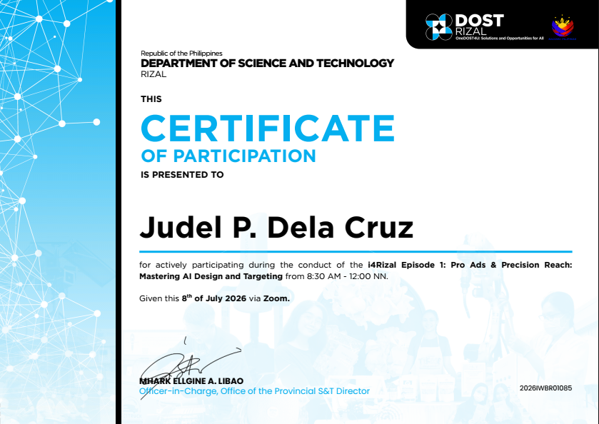
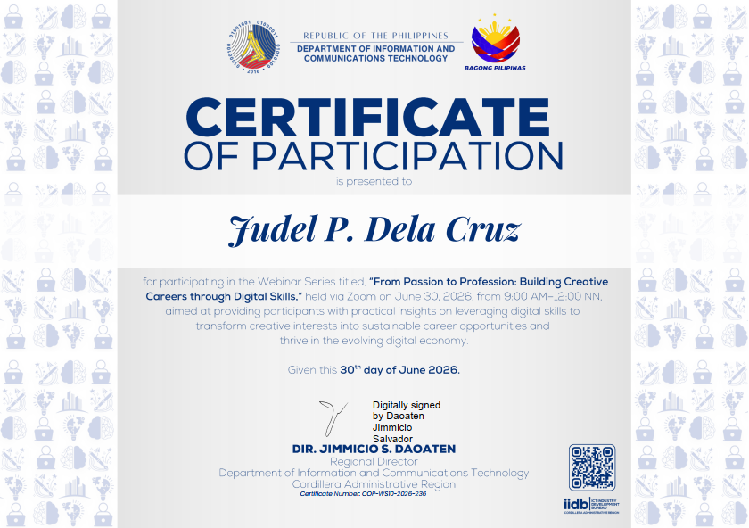
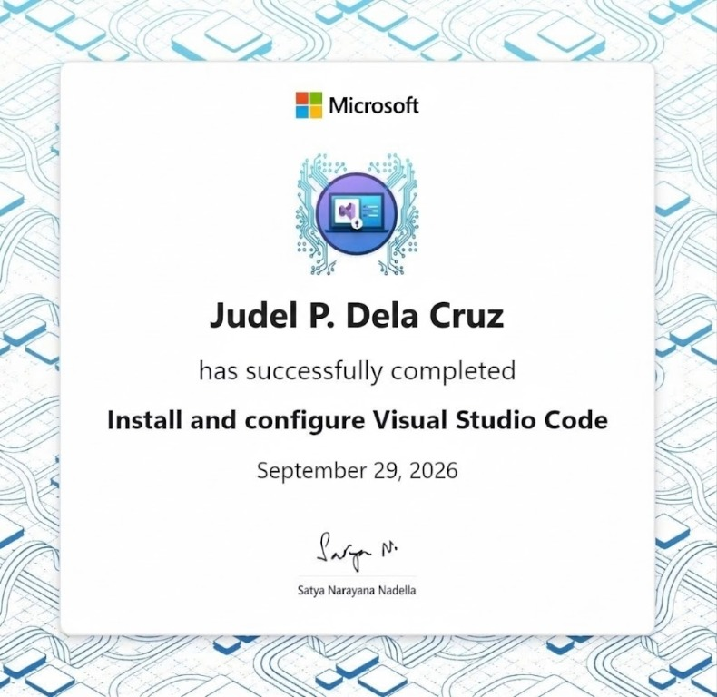
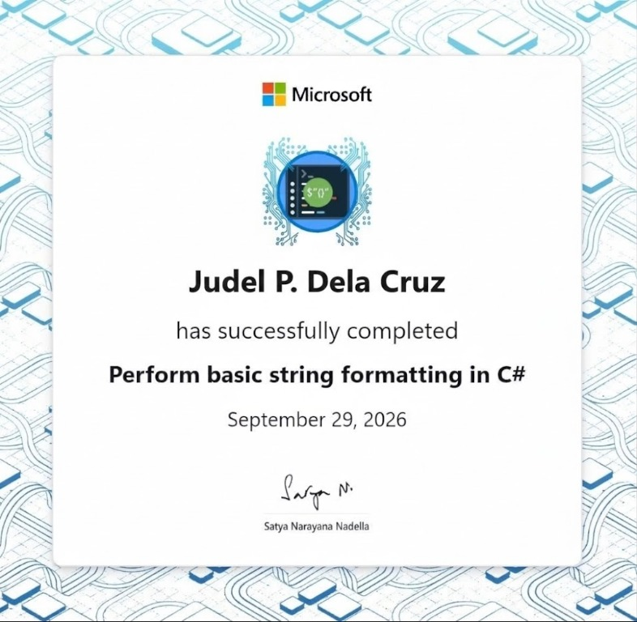
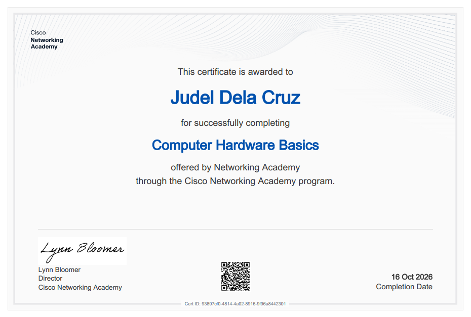
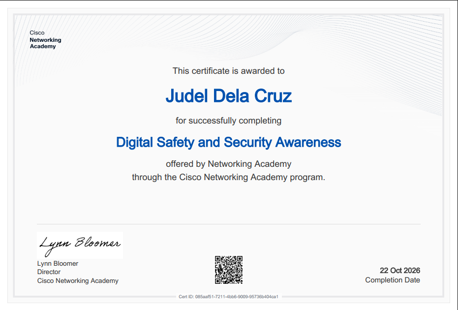
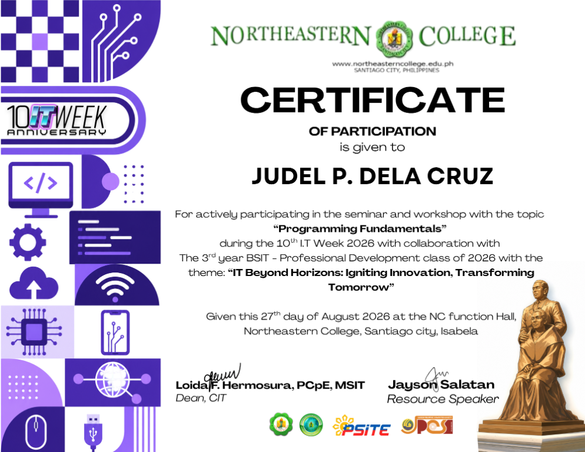

01
Skills
- 01 / Programming
- 02 / Web development
- 03 / Database
Information Technology · Aspiring IT Professional
“Learning today, building thoughtful technology for tomorrow.”
I’m an Information Technology student who enjoys solving problems, learning how technology works, and creating digital experiences that are useful and easy to understand.
Information Technology
Northeastern College
Santiago City National High School
Mastertech Computer & Electronics
FEBRUARY — MARCH 2024Fixed and maintained computer hardware and software.
Assisted in the setup and configuration of network infrastructure.
Certificates

IBES & London Examinations Board · July 29, 2026

DOST Rizal · July 22, 2026

DOST Rizal · July 8, 2026

DICT · June 30, 2026

DICT CALABARZON Regional Office · July 22, 2026

Microsoft · September 29, 2026

Microsoft · September 29, 2026

Microsoft · September 29, 2026

Microsoft · September 28, 2026

Cisco Networking Academy · October 16, 2026

Cisco Networking Academy · October 22, 2026

Northeastern College 10th IT Week · August 27, 2026

Northeastern College 10th IT Week · August 27, 2026

Northeastern College 10th IT Week · August 27, 2026

Northeastern College 10th IT Week · August 27, 2026

TESDA · Issued June 3, 2024 · Valid through June 2, 2029
Resume

Contact
I’m always glad to connect, hear about interesting work, and meet people who care about what they do.